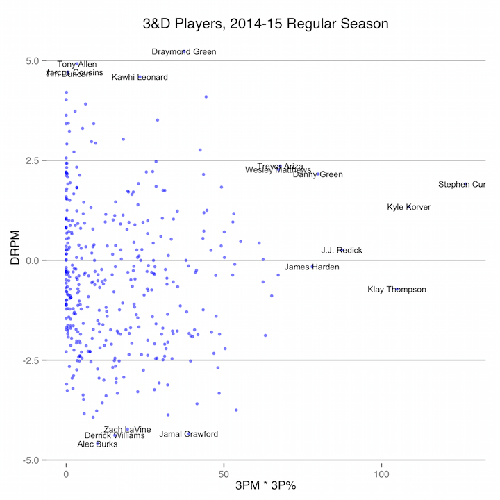
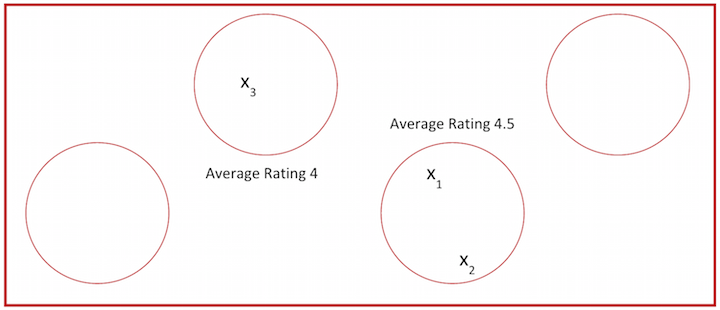
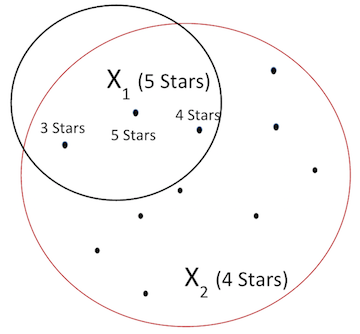
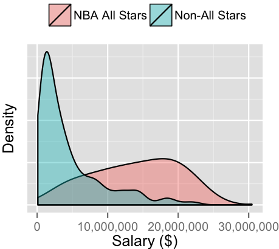
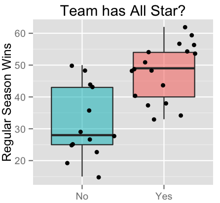
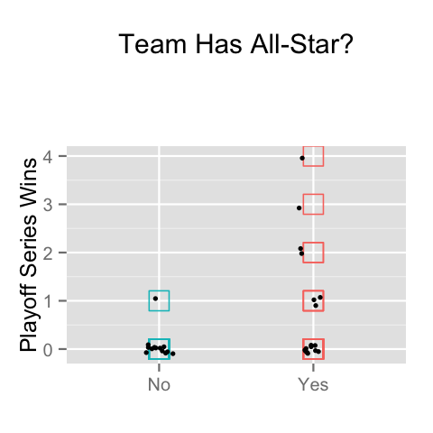
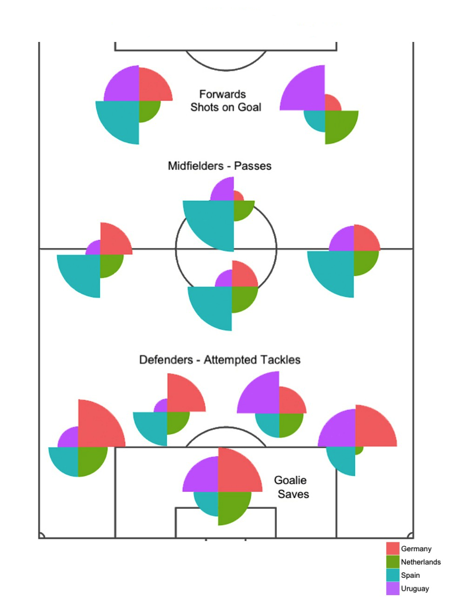

Charting 3&D Players in the NBA this Year
'3&D' players in basketball are ones who contribute to their teams largely by scoring a good amount from three and playing solid defense. These are two of the most important skills in the modern NBA, which makes such players incredibly valuable.
This chart just takes into account 3P%, given that a player averages over one three pointer a game. The black lines are the 75th percentiles for each stat, so players in the top right are the strongest 3&D players. Obviously some of them, like Steph, are more than just 3&D players.
Jamal Crawford is the anti-3&D player.
I wanted to show the metric 3PM * 3P% also because I feel like Steph Curry is a better shooter than Kyle Korver. Korver might have a higher shooting percentage, but he isn't getting the brunt of the opponent's defense every night. So 3PM takes into account volume shooters, and gives people like Steph a boost over people like Kawhi, who only take a few 3 point shots a game.
The data for the chart was scraped from ESPN and Basketball Reference, and can be found here: CSV data
NBA Shot Chart for Best Player in Basketball
Thanks to http://savvastjortjoglou.com/nba-shot-sharts.html for showing how to do this. I'm going to try out a percentage shot chart soon.
Visualizing Concentrations of Restaurants in Pittsburgh (work in progress)
Yelp Restaurant Recommendation Engine for Pittsburgh
Restaurant Recommendation Engine!
For a class, I made a recommendation engine for restaurants in Pittsburgh. The link to it is right above. You input three restaurants you've been to and how much you liked them, and the engine outputs a restaurant recommendation for where you'd probably like to go next.
The tool was made using the dataset available from the Yelp Dataset Challenge. It includes information on restaurants, like where they are, what kinds of food they have, and how popular and how expensive they are. Using these fields for each restaurant in Pittsburgh, I clustered restaurants such that similar restaurants fall into the same cluster. The clustering was done in SAS EM, which uses a Cubic Clustering Criterion to estimate an appropriate number of clusters.
Once clusters are formed, the user's inputted restaurants are considered. A cluster to make a recommendation from is chosen by determining which clusters the user's restaurants fall under, and then taking into account the weighting given by the score each restaurant receieved. The cluster with the highest average ranking is selected as the one to search within. In the case of a tie between two clusters, a decision is made at random.
Within the selected cluster, we can see where, on a distance mapping, the user's restaurants are in relation to the other restaurants in the cluster. A distance vector is created, with weighting to the restaurants' existing average ratings from all Yelp users, to determine which restaurant is both close in distance to the individual user's preferred restaurants and has a high average rating. This is the restaurant that is outputted as the recommendation.
There are many areas for improvement. One is taking into account the restaurant rating history of a user's friends, which could be a good measure for what the user would like to go to. Each user in the Yelp dataset is matched with his or her friends (through unique identifiers), so such a model could be built. But through testing of the approach above, the results seem quite accurate and reasonable for the revealed preferences given by the user.
How Important are All-Stars for an NBA Team?
Of the around 5181 players who were signed to a contract during the 2013-14 NBA season, 24 of them were named as All-Stars. That puts those 24 players into an incredibly selective group, as they're chosen from a pool of players who are already the very best in the world.
Of interest is the benefit All-Stars bring to an NBA team. All-Stars have a cost in terms of much higher salary requirements, and so the hope is that they bring regular season and playoff success to the teams for which they play. Questions to consider: does having an All-Star really boost the number of wins for a team during the regular season? Does it help them get further in the playoffs? How much of a team's success can be attributed to their All-Stars?
To gauge the cost of having an All-Star on a team, we can look at salaries:
There is a clear difference in salaries for All-Stars versus non-All-Stars. Few regular players make more than $10M a year, while the average for an All-Star is much higher than that. The All-Star salaries are in red and the regular salaries are in blue, and a density curve for each group is plotted. The mean and standard deviation for the two groups are:
| Mean ($) | St. Dev. ($) | |
| All Stars | 13,815,908 | 6,071,697 |
| Non-All Stars | 4,522,527 | 4,831,684 |
A Wilcoxon Test, which is a statistical hypothesis test for comparing two non-normally distributed related samples, of these two groups results in a p-value of 5.324 * 10-11, which is low enough to suggest a statistically significant difference in salaries at any reasonable alpha level (W=1166.5 with a one-tailed hypothesis test).
Now that we have established a significant difference in salaries for All-Stars, we can see what impact they have on regular season wins for their teams:
In this graphic, which shows the distributions of wins for teams with and without All-Stars as boxplots, we can see a clear increase in the number of wins for teams with All Star players. There is some degree of overlap, as some teams without All Stars have more wins than teams with, but the overall trend is clear. This difference is statistically significant with a p-value of 0.0001451 (by performing a one-tailed Welch two sample t-test with alpha = 0.01).
A linear regression model, with the number of regular season wins as the response variable and the presence of an All-Star as the predictor variable (which is binary, with 1 meaning that the team has an All-Star), results in:
| Coefficient | Std. Error | p-value | |
| Intercept | 31.692 | 2.797 | 5.72e-12*** |
| Has Allstar | 16.425 | 3.716 | 0.000135*** |
The regression model can be presented in the form Team.Wins = 31.692 + 16.425 * Has.Allstar. This would indicate that a team having an All-Star boosts their wins by about 16 and a half games for the year. The R2 = 0.3899, which means that the presence of an All-Star accounts for about 39% of the variation in the number of regular season wins for a team. This is not a great model, as there are some unexplained factors going into team wins, and also that there are likely confounding effects between having an All-Star and team wins. One cause for concern is that the number of wins for a team over the last few years is likely to draw All-Stars to the team in the first place, and also that All-Stars are selected based on win percentages of the team, and so teams that are winning are more likely to have All-Stars, which reverses the relationship between All-Stars and wins.
However, with one exception, the All Stars from the 2013-14 season had been on the same team as from the year before (Dwight Howard is the one who transferred teams from the previous year). Thus, we can make an assumption that the All Stars were playing at a similar level as they did the previous year, and so played similarly to benefit their team in the 2013-14 season. This would mean that the All Stars selected were independent of the team's wins that year, as the players selected were consistenly playing at a high level to suppor their team, regardless of had they been selected as All Stars or not. This would support the use of All Stars as a predictor for team wins in a regression model.
We can further look at the effect of All-Stars on the playoff results of their teams:
And in this graphic, we can see that teams without an All-Star player didn't make it past the second round of the playoffs in the 2013-14 season, while all the teams that made the conference finals and league finals had at least one All-Star.
A linear regression model of this relationship, of playoff wins on a binary All-Star variable, takes the form Playoff.Wins = 0.07692 + 0.74661 * Has.Allstar. The output is:
| Coefficient | Std. Error | p-value | |
| Intercept | 0.07692 | 0.26413 | 0.7730 |
| Has Allstar | 0.74661 | 0.35087 | 0.0423* |
This regression suggests that the presence of an All-Star on a team results in about 0.7 playoff series wins over not having an All-Star. This model is simple and not completely robust, as the data is for only one year, but the trend, particularly in the graph, is clear.
We have looked at how All-Stars impact regular season and playoff performance of their respective teams, and conclude that All-Stars bring substantial benefit to their teams. Their teams win more games, which likely contributes to ticket and merchandise sales, and they go further in the playoffs. Teams without All-Stars didn't make it past the divisional round of the playoffs in 2014. In a game where one player can take over a series, having All-Stars players is critical and often worth the cost of their higher contracts.
Link to R code for graphs and regressions2010 World Cup: How do the Best Teams Compare?
We are interested in breaking down the best World Cup soccer teams by player position on the field. Each rose plot in the graphic below represents a player, and each subsection of the rose plot is one of the four teams that went the furthest in the World Cup. Red represents Germany, green the Netherlands, blue Spain, and purple Uruguay. Forwards are measured by the number of shots they take on goal, midfielders by their number of passes, defenders by their number of attempted tackles, and goalies by their number of saves.
We can see a number of trends in this graph. Spanish midfielders pass the ball far more frequently than do those of other countries. German defenders are aggressive in terms of attempted tackles, and overall Germany seems to be forced to make more plays on the defensive side of the ball. Uruguay, in comparison, plays more on the offensive side of the field.
Spain won this World Cup, and their playstyle can be best characterized as a balance between good offense and defense - they make the second most tackles of the teams while also passing and scoring at a high rate.